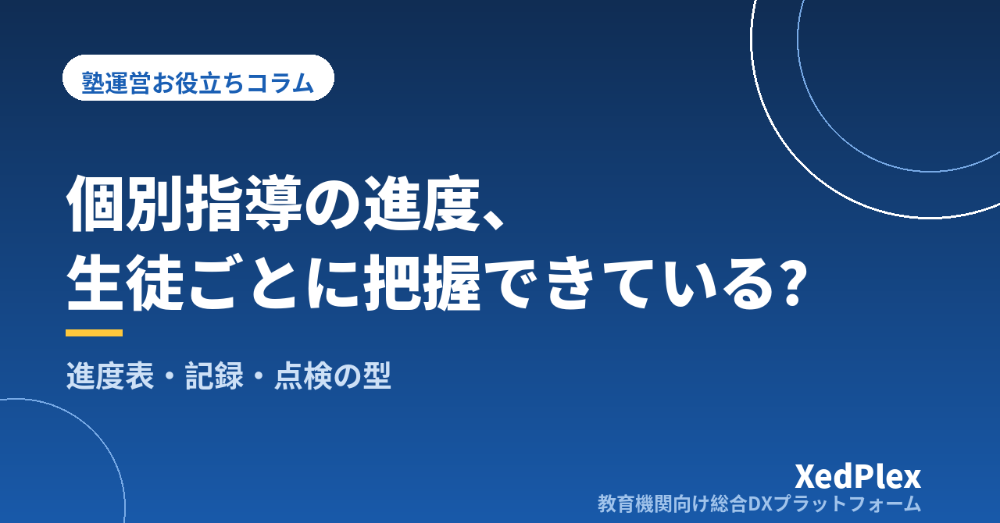

個別指導塾の進度管理、生徒ごとにバラバラな授業をどう把握する？｜進度表の項目・授業後の記録・講師間の共有を型にする

個別指導の授業が始まる直前、講師が「この子、前回どこまでやったっけ」とテキストをめくる。保護者から「学校の授業に追いついていますか」と聞かれて、塾長は担当講師に確認しないと答えられない。定期テストの2週間前になって、テスト範囲まであと3単元残っていることに気づく──生徒ごとに教材も進み方も違う個別指導塾では、珍しくない場面ではないでしょうか。
集団授業ならカリキュラム表どおりに全員が進みますが、個別指導は「生徒の数だけ進度がある」のが前提です。その進度が担当講師の記憶やテキストの書き込みにしかないと、講師の交代や欠勤、保護者への説明、テスト前の追い込みのたびに確認の手間とヒヤリが生まれます。この記事では、少人数の塾でも無理なく続けられる進度管理の型を、記録の項目・記録のタイミング・共有・点検の4つに分けて整理します。
個別指導の進度が「見えなくなる」3つの原因
進度が把握できなくなる原因は、講師の怠慢ではなく、記録の置き場所と書き方が決まっていないことにあります。
| 原因 | よくある状態 | 起きること |
|---|---|---|
| 記録が教材の中にしかない | テキストに日付や丸印を書き込むだけ。教材は生徒が持ち帰る | 授業前に教材が手元にないと進度が分からない |
| 書き方が講師ごとに違う | 「p.32まで」「二次関数途中」「だいたい終わった」など表現がバラバラ | 別の講師が読んでも、どこから始めればいいか判断できない |
| 「目標」と比べていない | どこまで進んだかは書くが、いつまでにどこまで進むべきかがない | 遅れに気づくのがテスト直前や面談の場になる |
特に3つ目が見落とされがちです。進度管理とは「今どこにいるか」を記録することだけでなく、「予定と比べて遅れていないか」に早めに気づくことです。この視点で、次の4つのステップを型にしていきます。
ステップ1：生徒ごとの進度表に残す項目を決める
進度表は細かく作り込むほど続きません。1生徒・1教科につき1行（または1枚）で、次の項目があれば十分です。
| 項目 | 書き方の例 | ポイント |
|---|---|---|
| 使用教材 | ○○問題集 中2数学 | 教材名を正式名称で。版や改訂年も分かると引き継ぎが楽 |
| 到達目標と期限 | 2学期期末の範囲（連立方程式の利用まで）を12/5までに | 定期テスト日程や受験日程から逆算して決める |
| 今回の到達点 | 単元3-2 例題4まで（p.48） | 「単元名＋ページ」の両方で書く |
| 理解度 | ◎／○／△の3段階 | 段階を増やしすぎない。△は次回の冒頭で復習 |
| 次回の開始位置 | p.49 練習問題から／△の例題3を先に復習 | 次の講師がそのまま読めば始められる書き方に |
大切なのは「到達目標と期限」を最初に書いておくことです。ここが空欄のままだと、記録は「進んだ記録」にとどまり、遅れの判断ができません。目標は定期テストの範囲や学校の授業進度、受験学年なら入試日程から逆算します。目標の立て方は生徒別学習計画の立て方と続ける仕組み、テスト前の逆算は定期テスト対策期間の運営も参考にしてください。
ステップ2：記録は「授業後2分」で書き切る
授業の直後に、その場で書く
進度の記録が続かない一番の理由は、「あとでまとめて書こう」と後回しにすることです。授業が終わった直後、生徒を見送ったその場で書く、と決めてしまいましょう。上の表の「今回の到達点」「理解度」「次回の開始位置」の3項目だけなら、慣れれば2分もかかりません。
表現をそろえるための約束ごと
講師が複数いる塾では、書き方の約束を3つだけ決めておくと、誰が読んでも同じ意味に取れるようになります。
① 到達点は「単元名＋ページ（問題番号）」で書く。「だいたい」「途中」は使わない
② 理解度は◎○△の3段階。△をつけたら理由を一言添える（例：「移項の符号ミスが多い」）
③ 次回の開始位置は「次の講師がそのまま始められる」書き方にする
保護者向けの指導報告書を書いている塾なら、進度の記録と報告書を別々に書くのではなく、進度の3項目を報告書の材料として使い回すと二度手間になりません。報告書の書き方は保護者に伝わる塾の指導報告書の書き方、授業後の記録習慣全般は塾の生徒記録（日誌）を残す習慣と活かし方で解説しています。
ステップ3：進度を講師間・塾長と共有する
進度表は「担当講師が自分のために書くもの」ではなく、塾全体で見るものとして置き場所を決めます。紙のファイルなら教室の決まった棚に、デジタルなら全講師が見られる共有の場所に置き、教材と一緒に持ち帰らせないことが基本です。
共有がうまくいっているかは、次の3つの場面で確認できます。
- 担当講師が欠勤したとき：代わりの講師が、進度表だけを見て授業を始められるか
- 保護者から問い合わせがあったとき：塾長が担当講師に聞かずに、その場で進み具合を説明できるか
- 担当替えのとき：新しい講師への引き継ぎが、進度表を渡すだけで済むか
どれかで詰まるなら、項目か置き場所のどちらかを見直すサインです。担当交代や欠勤時の引き継ぎの詳細は講師間で生徒情報を引き継ぐ仕組み、初めて入る講師への教え方は個人塾でもできる講師研修と指導の標準化にまとめています。
ステップ4：月に1回、塾長が「遅れ」を点検する
全員を細かく見なくていい
進度表がそろってきたら、月に1回、塾長が全生徒の「到達目標と期限」と「今回の到達点」だけを見比べます。1人あたり数十秒、生徒30人でも20〜30分ほどで終わる作業です。見るのは次の3つのサインだけで構いません。
| サイン | 考えられる原因 | 次の一手 |
|---|---|---|
| 期限までの残り回数で、残りの範囲が終わらない | 目標設定が無理／欠席が続いた／復習に時間を取られている | 授業内容の優先順位を見直す。必要なら振替や追加の相談を保護者へ |
| △が同じ単元で続いている | 前の学年の内容でつまずいている可能性 | さかのぼり学習を短時間入れる。確認テストで定着を確かめる |
| 記録が2回以上空いている | 書き忘れ、または欠席・振替が処理されていない | 担当講師に確認。欠席・振替の記録と突き合わせる |
遅れに気づいたら、保護者へは「遅れています」だけでなく、原因の見立てと、次の一手をセットで伝えます。テスト直前ではなく1か月前に伝えられれば、家庭学習の追加や振替の相談など、取れる手段が増えます。欠席・振替の扱いは塾の欠席・振替管理のルール作りと運用、定着の確認には確認テスト・小テストの作り方と運用が参考になります。
面談の資料にそのまま使う
月1回の点検結果は、保護者面談の資料にそのまま使えます。「目標」「現在地」「理解度が△の単元」「次の1か月でやること」の4点が並んでいれば、面談で話す中身はほぼそろっています。面談資料の作り方は保護者面談の準備を1時間で終わらせる方法をご覧ください。
まとめ：進度管理は「予定と現在地を比べる仕組み」
個別指導の進度管理に、複雑な管理表は必要ありません。進度表に到達目標と期限を書く、授業後2分で到達点・理解度・次回の開始位置を残す、進度表を塾全体で見られる場所に置く、月に1回塾長が遅れのサインを点検する。この4つを型にするだけで、「前回どこまでやったっけ」の確認や、テスト直前のヒヤリは大きく減らせます。
まずは今週の授業から、全講師で「次回の開始位置」を書くところだけそろえてみてください。それだけでも、欠勤時の代講や保護者からの問い合わせへの対応がぐっと楽になり、塾長がすべてを覚えておかなくても回る教室に一歩近づきます。
この記事を書いた運営より
私たちは、個人経営・小規模の学習塾向けに、生徒管理・QRコードでの入退室記録・月次請求・保護者へのLINE/メール通知・AIによる学習支援までをひとつにまとめた教育機関向け総合DXプラットフォーム「XedPlex（ゼドプレックス）」を開発・提供しています。初期費用は0円、料金は生徒1名あたり月額300円（税込）から。生徒50名の塾なら月15,000円（税込）です。全国8つの教室で導入されており、導入塾には紹介ホームページの無料作成も行っています。機能の詳細説明はこちら。
XedPlexの詳細を見る